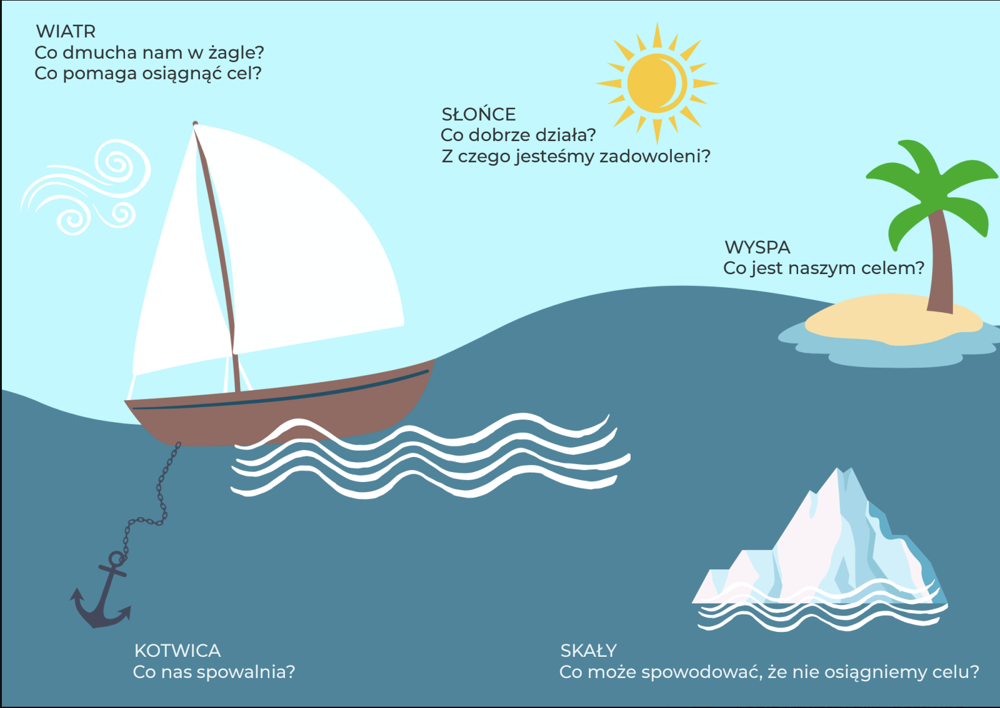

Łódź zespołu – ćwiczenie, które pokazuje, co pomaga nam płynąć do celu, a co trzyma nas w miejscu
Czasami zespół doskonale wie, dokąd chce dotrzeć, ale znacznie trudniej odpowiedzieć mu na pytanie, dlaczego mimo to nie posuwa się wystarczająco szybko.
W takich sytuacjach zamiast kolejnej analizy w Excelu warto na chwilę zmienić perspektywę.
Wyobraźcie sobie, że Wasz zespół płynie łodzią.
Dokąd płynie? Co daje mu wiatr w żagle? Co jest kotwicą? A gdzie znajdują się skały, o które możecie się rozbić?
Jak działa ćwiczenie?
Na tablicy umieść pięć elementów:

{{ e.sub }}
Tak skonstruowany schemat znajduje się również na końcowej planszy materiału 4change.
Co daje to ćwiczenie?
Metafora pozwala rozmawiać o trudnych kwestiach w mniej oceniający sposób. Zamiast pytać: „Kto zawala?”, pytamy: „Co jest naszą kotwicą?”.
To niewielka zmiana języka, ale może całkowicie zmienić jakość rozmowy.
Ćwiczenie pomaga zidentyfikować mocne strony zespołu, bariery, ryzyka i zasoby oraz zbudować wspólną perspektywę celu. W materiale 4change rekomendujemy je między innymi wtedy, gdy zespół wpada w błędne koło narzekania, potrzebuje wzmocnienia albo chce przyjrzeć się potencjalnym ryzykom.
Chcesz przeprowadzić takie ćwiczenie ze swoim zespołem? Dobierzemy formę i scenariusz do Waszego celu.